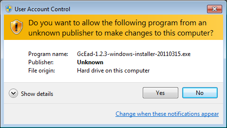
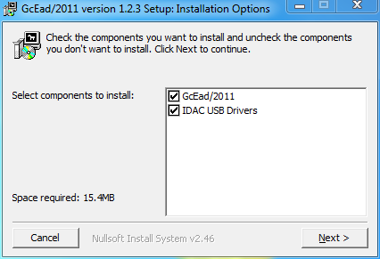
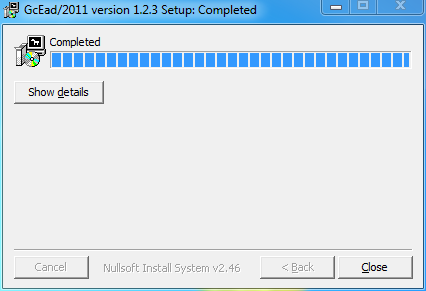
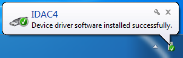
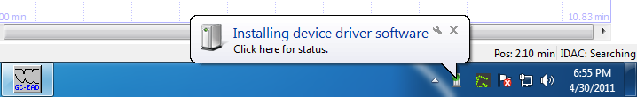
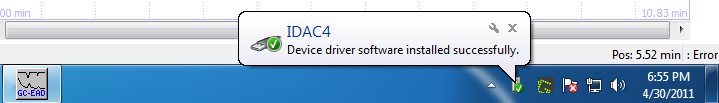

-
Please turn off the IDAC and disconnect its USB cable before starting the installation.
-
When you open the installer, you will see the following prompt. Click on Yes to continue.

-
Select the option IDAC USB Drivers. Then click Next.

-
Click Install.

-
A Windows Security dialog will probably be displayed asking you whether the driver should really be installed. Click Install this driver software anyway.

-
Click Close to end the installation program.

-
Connect your IDAC's USB cable to the computer and turn it on if necessary.
After a few moments, the following notice will appear at the bottom of your screen. However, it quickly disappears, so you might not see it.

-
Start GcEad/2012. Wait for a bit while GcEad/2012 tries to initialize the IDAC, at which point you should see the following notice at the bottom of the screen.

After waiting for a little bit longer, the notice update to say that the driver has been successfully installed.

-
At this point, the IDAC probably cannot be used yet. To insure proper recognition of the IDAC by windows, please again disconnect its USB cable, turn off it's power switch if it has one, and restart Windows.
-
Once windows has restarted, reconnect the USB cable and turn on the IDAC power switch if it has one.
-
Start GcEad/2012 again. You should now be able to use your IDAC.